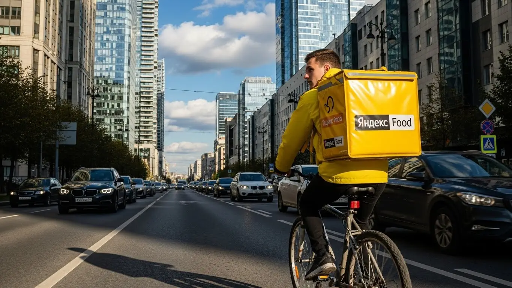
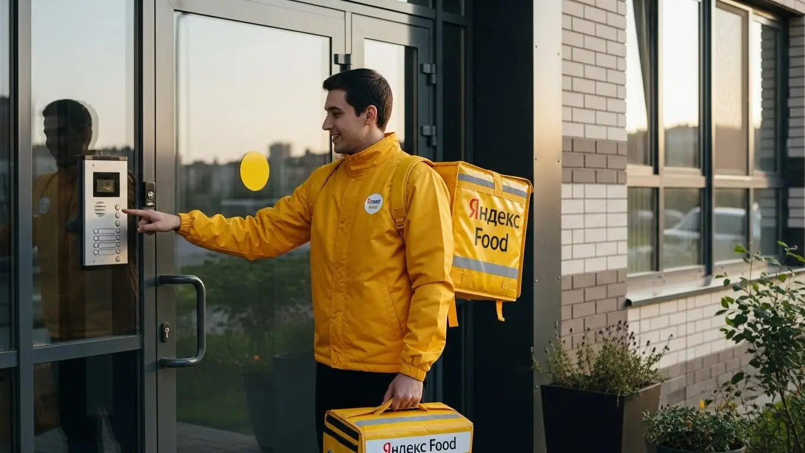
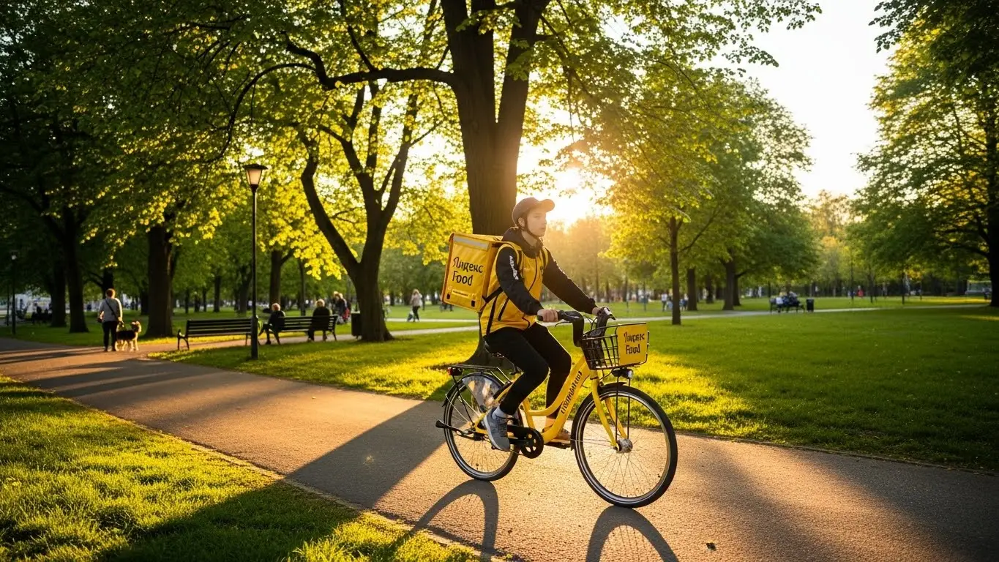

Доход курьера Яндекс Еда в Балашихе в 2025-2026: разбор условий
- Работа курьером Яндекс Еды в Балашихе: для кого эта вакансия и что вы получите
- Сколько вы будете зарабатывать курьером в Балашихе: калькулятор дохода и разбор выплат
- Реальный заработок курьера в Балашихе: смены и месячный доход
- График работы и форматы занятости
- Требования к кандидату и документы
- Самозанятость, налоги и юридическая чистота
- Пошаговое оформление и первый выход на линию в Балашихе
- Пешком, на вело или на авто: что выгоднее в Балашихе
- Районы, маршруты и «топовые» зоны заказов в Балашихе
- Безопасность, страховка, штрафы и оплата простоя
- Плюсы и возможные минусы работы курьером в Балашихе
- Реальные истории и отзывы курьеров из Балашихи
- Ответы на главные вопросы о работе курьером Яндекс Еды в Балашихе
- Короткие ответы на главные вопросы
- Итоги и ваш следующий шаг
Все города
Привет! Думаешь крутить педали или жечь бензин в доставке по Балашихе, но сомневаешься? Боишься, что реальный доход съедят штрафы и вечные пробки на Горьковке, а велосипед или машина превратятся в хлам за пару месяцев? Правильно делаешь, что сомневаешься. Забудь общие статьи для всей России. Здесь — вся правда про условия работы курьером Яндекс Еды и Яндекс Лавки именно в нашей Балашихе, без прикрас и рекламной мишуры.
Поверь, влететь в эту тему без подготовки — верный способ разочароваться через месяц и бросить всё, оставшись в минусе. Одно дело — видеть красивые цифры в рекламе, и совсем другое — столкнуться с реальными расходами на бензин, налогами для самозанятого и понять, как твой рейтинг влияет на количество заказов. Большинство новичков у нас в городе теряют первые деньги, потому что не знают, где пиковый спрос в Новом Измайлово, а где можно час простоять впустую в районе Южного. Чтобы сразу оценить условия, увидеть ответы на частые вопросы и воспользоваться калькулятором, загляни на официальную страницу, где подробно описана работа курьером Яндекс Еда в Балашихе.
В этом гиде мы честно разберём, какой транспорт лучше выбрать для наших дорог и микрорайонов. Посчитаем, сколько реально остаётся в кармане после всех вычетов в 2025 году. Выясним, в каких районах Балашихи — от 1 Мая до Авиаторов — самые «жирные» заказы и в какое время. Я покажу на примерах, за что прилетают штрафы, как их избежать, и стоит ли вообще игра свеч, когда на улице ливень или мороз.
Меня зовут Алексей. Я не теоретик — я сам откатал сотни смен по Балашихе, сначала на велике, потом на машине, а сейчас у меня свой небольшой таксопарк-партнёр. Я знаю всю эту кухню изнутри и расскажу тебе всё как есть, без обещаний золотых гор. Так что пристегивайся или проверяй давление в шинах. Сейчас всё разложу по полочкам, чтобы ты принял правильное решение.
Чтобы ты сразу понял, о чём пойдёт речь и где искать ответы на свои вопросы, я набросал короткий навигатор по статье.
Что ты точно узнаешь из этого разбора по Балашихе
В этой статье ты ТОЧНО узнаешь:
- Сколько реально можно заработать в Балашихе за смену на велике или авто, и от чего зависит итоговая сумма?
- В каких районах — от Железнодорожного до Нового Измайлово — больше всего заказов и выше коэффициенты?
- Что выгоднее для Балашихи: работать пешком, на велосипеде или на своей машине с учётом пробок и расстояний?
- Что такое самозанятость, как её оформить за 10 минут и сколько налогов придётся платить?
- За что на самом деле могут снизить рейтинг или применить штраф, и как этого избежать?
- Как работает оплата простоя, если заказов мало, и что покрывает бесплатная страховка?
А если тебе некогда читать всю статью — переходи сразу к заключению, где ты найдёшь короткие ответы на все эти вопросы и указания, в каких разделах искать подробности.
А вот наглядная инфографика с основными цифрами по работе в Балашихе.
Работа курьером в Балашихе: ключевые цифры
Работа курьером Яндекс Еды в Балашихе: для кого эта вакансия и что вы получите
Кому подойдёт эта работа в Балашихе
Давай начистоту: эта вакансия курьера подходит многим, если понимать, зачем ты сюда идёшь. В первую очередь, это отличный вариант для студентов. График можно подстроить под учёбу, выходить на пару часов после пар и иметь свои деньги на карманные расходы, не клянча у родителей. Никакого строгого начальника, который будет отчитывать за опоздания на 5 минут.
Также это хороший старт для тех, у кого нет опыта работы — вакансия не требует диплома или резюме на три страницы. Нужен только смартфон, желание двигаться и минимальная ответственность. Если ты ищешь подработку, чтобы закрыть кредит или накопить на что-то, — это тоже твой вариант. Вышел на смену вечером или в выходные, доставил несколько заказов, получил деньги на карту. Водителям на своем авто тоже выгодно: можно развозить заказы в часы пик, когда в такси глухо, или брать крупные доставки из гипермаркетов. Главное, что объединяет всех, — это потребность в гибком графике и быстрых ежедневных выплатах, которые особенно удобны для самозанятых.

Главные преимущества для жителей районов микрорайон Железнодорожный, микрорайон Янтарный, микрорайон Авиаторов
Балашиха — город большой и растянутый. Ехать с одного конца на другой, чтобы начать смену, — это потеря времени и денег. Главный плюс работы в Яндекс Еде здесь — возможность работать буквально у себя под окнами. С помощью приложения Яндекс Про ты можешь выбрать конкретную зону, например, в Железнодорожном, и доставлять заказы из местных кафе и магазинов по знакомым улицам. Не нужно толкаться в пробках на Носовихинском шоссе, чтобы добраться до «рыбного» места.
Это касается и других крупных микрорайонов, будь то Янтарный или Авиаторов. Везде есть своя инфраструктура, свои точки притяжения — пиццерии, суши-бары, магазины. Ты можешь выйти из дома, через 5 минут включить приложение и уже принимать первый заказ. Такая работа экономит и силы, и деньги на проезд, а значит, твой чистый доход становится выше. Ты доставляешь на своей территории, где знаешь каждый двор и короткий путь.
Краткое обещание по доходу и условиям
Если говорить о деньгах, то в Балашихе цифры вполне достойные. При частичной занятости, выходя на 4–5 часов в день, можно спокойно делать 2000–3000 рублей. Если же рассматривать это как основную работу и уделять ей 8–10 часов, то месячный доход может доходить до 80 000–100 000 рублей и даже больше, особенно если ты на машине и не ленишься работать в пиковые часы.
Ключевые условия работы просты и прозрачны. Во-первых, свободный график — ты сам решаешь, когда и на сколько выходить на линию. Во-вторых, ежедневные выплаты — заработал сегодня, получил сегодня. Не нужно ждать конца месяца. В-третьих, минимальные требования: начать можно без опыта — всему научат на коротком онлайн-инструктаже. По сути, это честное предложение: твоё время и усилия в обмен на быстрые и стабильные деньги.
Сколько вы будете зарабатывать курьером в Балашихе: калькулятор дохода и разбор выплат
Из чего складывается доход курьера
Твой заработок — это не просто ставка за час, а конструктор, который ты собираешь сам в течение смены. Во-первых, есть базовая оплата за каждый выполненный заказ. Во-вторых, к ней прибавляется плата за расстояние — учитывается и путь до ресторана, и дорога до клиента. Чем дальше везти, тем больше заплатят.
Самое интересное — это бонусы и повышающие коэффициенты. Когда в каком-то районе Балашихи заказов становится очень много (например, в пятницу вечером или в плохую погоду), на карте в приложении включается «фиолетовая зона». Стоимость каждого заказа в этой зоне умножается на коэффициент. Кроме того, есть персональные бонусы за выполнение определённого числа заказов в день или неделю. Не стоит забывать и про чаевые от клиентов — они полностью твои. А ещё сервис платит за долгое ожидание в ресторане (оплата простоя) и может компенсировать проезд на общественном транспорте, если доставка очень дальняя.
Как пользоваться калькулятором дохода
На сайте есть специальный инструмент — калькулятор дохода. Это не точная зарплата до копейки, а скорее ориентир, чтобы ты мог прикинуть свой потенциальный заработок. Пользоваться им просто: выбираешь свой город — Балашиха, а затем указываешь, как планируешь доставлять: пешком, на велосипеде или на своем авто.
После этого двигаешь ползунки: сколько часов в день и сколько дней в неделю ты готов работать. Калькулятор на основе средних данных по городу покажет примерный доход за день и за месяц. Это полезно, чтобы понять, на что можно рассчитывать, и соотнести свои ожидания с реальностью. Поиграйся с разными вариантами — увидишь, как меняется заработок в зависимости от занятости и способа доставки.
Калькулятор дохода курьера в Балашихе
Примерный доход в месяц:
Это ориентировочный расчёт на основе средней ставки в Балашихе. Реальный заработок зависит от спроса, бонусов и вашего графика.
Поиграйся с калькулятором, чтобы прикинуть цифры. А когда будешь готов, загляни на официальную страницу, чтобы увидеть самые свежие условия и подать заявку — там есть вся информация про то, как идёт работа курьером Яндекс Еда в твоём городе, включая ответы на вопросы и форму анкеты.
Примеры расчёта для пешего, вело- и авто‑курьера в Балашихе
Давай на конкретных примерах.
- Пеший курьер. Допустим, ты студент и работаешь в центре Балашихи, в районе площади Славы, по 4 часа после учёбы. Здесь много кафе и плотная застройка. Заказы короткие, но их много. За смену можно сделать 8–12 заказов и заработать в среднем 1500–2000 рублей.
- Велокурьер. Ты работаешь полный день, 8 часов, и курсируешь между спальными районами, например, от микрорайона Южный до Первомайки. На велосипеде ты быстрее пешего, можешь брать заказы на 2–3 км. Твой дневной заработок при такой загрузке составит уже 3000–4500 рублей.
- Курьер на автомобиле. Ты выходишь на линию в вечерние часы и в выходные, когда спрос максимальный. Берёшь заказы по всей Балашихе, включая дальние доставки в Заря или Северный-2. Через приложение Яндекс Про могут поступать не только заказы из Яндекс Еды, но и из Яндекс Лавки или крупные закупки из гипермаркетов по линии Яндекс Доставки. За 8-часовую смену в выходной день твой доход может составить 5000–7000 рублей, из которых нужно будет вычесть расходы на бензин.
У меня есть знакомый парень, который начинал как курьер на своем авто в Балашихе. Сначала просто катался по своему району, а потом просёк фишку. Он заметил, что в обеденное время коэффициенты растут возле промзон и офисных центров на Западной коммунальной зоне, а вечером — в новых ЖК вроде «Акварелей». В итоге он стал планировать свои смены, перемещаясь между этими точками. В прошлую дождливую субботу он за 9 часов работы сделал почти 6000 рублей чистыми.
В общем, твой заработок напрямую зависит от того, как ты работаешь: какой транспорт используешь, какие часы и районы выбираешь. Главный совет новичку: начни со своего района, чтобы освоиться, а потом изучай карту спроса в приложении. И не забывай про термокороб или термосумку — они нужны, чтобы доставлять заказы горячими и получать хорошие оценки и чаевые.
Реальный заработок курьера в Балашихе: смены и месячный доход
Теперь давай от общих принципов к конкретным цифрам. Сколько реально остаётся в кармане после смены в Балашихе? Это не фиксированная зарплата, а доход, которым ты управляешь сам. Два курьера за одно и то же время могут получить совершенно разную сумму. Один сидел в «тихом» районе в обед, а второй ловил вечерний ливень в густонаселённом микрорайоне — его доход будет в разы выше. Всё зависит от твоего подхода: сколько часов ты готов работать, на чём передвигаться и насколько грамотно используешь пиковые часы спроса.
Диапазон дохода для подработки и полной занятости
Чтобы ты мог прикинуть, на что рассчитывать, я разбил доход на два основных формата: подработка для тех, кто совмещает, и полная занятость. Цифры — средние по Балашихе, без учёта расходов на транспорт и налог для самозанятых (обычно это 6% от дохода), но они дают честное представление о потенциале.
Подработка (2–4 часа в день, 3–5 дней в неделю):
- Пеший курьер: Идеально для старта или работы в одном плотном квартале. За вечернюю смену в 3–4 часа выходит в среднем 1000–1800 рублей. За месяц такой дополнительный доход может составить 20 000–35 000 рублей.
- Курьер на велосипеде: На велосипеде ты мобильнее, покрываешь большее расстояние. За те же 3–4 часа можно сделать 1500–2500 рублей. В месяц набегает уже 30 000–50 000 рублей.
- Курьер на автомобиле: Машина даёт максимум возможностей, особенно для заказов между районами, например, из центра Балашихи в Железнодорожный. За короткую смену доход составит 2000–3500 рублей, а месячная подработка принесёт 40 000–65 000 рублей.
Полная занятость (8–10 часов в день, 5–6 дней в неделю):
- Пеший курьер: Стабильная работа в районах с плотной застройкой. Дневной заработок — 2500–3500 рублей. В месяц можно рассчитывать на 55 000–75 000 рублей.
- Велокурьер: Один из самых эффективных форматов для Балашихи. За полный день выходит 3500–5000 рублей. Месячный доход — 75 000–100 000 рублей.
- Автокурьер: Самый высокий потенциал заработка. Полный рабочий день приносит 5000–8000 рублей и больше, особенно в дни высокого спроса. Месячная зарплата курьера может достигать 100 000–150 000 рублей и выше, если работать с умом.
Как район, время суток и погода влияют на доход
Твой главный инструмент для увеличения заработка — это приложение «Яндекс Про» и понимание, когда и где нужно быть. Просто выйти на линию в любое время — значит терять деньги. Важно ловить моменты, когда заказов много, а курьеров мало.
Ключевые факторы — это время, погода и место. Пиковые часы в Балашихе стандартные: обед с 12:00 до 15:00 и ужин с 18:00 до 21:00. В это время люди массово заказывают еду из ресторанов и продукты из магазинов. Пятница вечер, суббота и воскресенье — это вообще золотое время, спрос держится почти весь день. В приложении такие зоны подсвечиваются фиолетовым — это значит, что действует повышенный коэффициент, и за каждый заказ ты получишь больше.
Погода — твой лучший друг. Как только начинается дождь, снегопад или сильная жара, большинство курьеров предпочитают отсидеться дома. А вот количество заказов, наоборот, взлетает. Коэффициенты в этот момент максимальные. Если ты готов работать в непогоду (особенно на своем авто), можешь за 2–3 часа заработать как за половину обычного дня. Плюс, в плохую погоду клиенты чаще оставляют хорошие чаевые, потому что ценят твой труд. В Балашихе это особенно заметно в крупных жилых комплексах вроде «Нового Измайлово» или «Алексеевской рощи».
Советы по увеличению заработка от опытных курьеров
Чтобы зарабатывать больше, не обязательно работать дольше. Важнее работать эффективнее. Вот несколько проверенных советов от меня и моих ребят. Во-первых, всегда планируй смены и бери плановые слоты в приложении, особенно на вечер и выходные. Это даёт приоритет в распределении заказов.
Во-вторых, изучи свой район. Не нужно гоняться за фиолетовыми зонами через весь город. Лучше досконально знать один-два района, например, свой родной «Южный» или центр около Советской улицы. Ты будешь знать все короткие пути, где припарковаться, и сможешь выполнять заказы быстрее. Со временем ты поймёшь, в каких домах и кварталах заказывают чаще всего.
В-третьих, сочетай форматы, если есть возможность. Например, если у тебя есть и велосипед, и машина, используй их по ситуации. В час пик в центре Балашихи, где всё стоит, велосипед будет быстрее. А для дальних заказов из одного микрорайона в другой, например, с Балашихи-1 в Железнодорожный, без машины не обойтись. И не брезгуй мультизаказами (когда везёшь несколько посылок по пути, например, из Яндекс Еды и Лавки) — это чистая экономия времени и сил.
Вот недавний кейс одного из моих водителей-курьеров. Была дождливая пятница, вечер. Он взял плановый слот в районе «Балашиха-2». Спрос был бешеный, карта в «Яндекс Про» вся горела. За 4 часа он выполнил 12 заказов, почти все с высоким коэффициентом. Итог — 3800 рублей «грязными» плюс 500 рублей чаевыми. Он просто оказался в нужное время в нужном месте и был готов работать, пока другие пережидали непогоду.
Сравнение среднего дохода в Балашихе по типам занятости
| Параметр | Пеший курьер | Велокурьер | Автокурьер |
|---|---|---|---|
| Подработка (3-4 часа/день) | 1 000 – 1 800 ₽/смена | 1 500 – 2 500 ₽/смена | 2 000 – 3 500 ₽/смена |
| Полная занятость (8-10 часов/день) | 2 500 – 3 500 ₽/смена | 3 500 – 5 000 ₽/смена | 5 000 – 8 000+ ₽/смена |
| Примерный доход в месяц (полная занятость) | 55 000 – 75 000 ₽ | 75 000 – 100 000 ₽ | 100 000 – 150 000+ ₽ |
В общем, твой реальный заработок — это не случайность, а результат твоих действий. Он напрямую зависит от того, когда, где и на чём ты работаешь. Мой главный совет: лови пиковые часы и плохую погоду, хорошо изучи свой район и используй плановые слоты, чтобы обеспечить себя заказами.
График работы и форматы занятости
Главный плюс этой работы, который ценят все — от студентов до мужиков вроде меня, — это свободный график. Начать можно без опыта, а дальше ты сам решаешь, когда выходить на линию, сколько часов работать и когда устраивать себе выходной. Нет начальника, который стоит над душой. Есть только ты, приложение «Яндекс Про» и заказы. Такие условия работы дают огромную гибкость, позволяя совмещать доставку с чем угодно.
Эта работа подходит разным людям именно благодаря гибкости. Кто-то выходит на пару часов вечером после основной работы, чтобы подзаработать на кредит или отпуск. Студенты катаются между парами. А кто-то, как некоторые мои водители-курьеры, делает это своей основной профессией и зарабатывает очень приличные деньги, работая полную неделю.
Подработка после учёбы или основной работы
Совмещать доставку с другой деятельностью проще простого. Вот пара реальных примеров из Балашихи. У меня есть знакомый студент, живёт в микрорайоне Железнодорожный. Он учится днём, а с 18:00 до 22:00 почти каждый будний день выходит на смену на велосипеде, доставляя заказы из Яндекс Еды. Катается по своему району, который знает как свои пять пальцев. В субботу работает почти полный день. Такая подработка приносит ему стабильные 12–15 тысяч в неделю, которых с головой хватает на его расходы.
Другой пример — менеджер, который каждый день ездит на работу в Москву. Он живёт в Новом Измайлово. Вечером, возвращаясь домой, он включает приложение и берёт 2–3 заказа по пути. В выходные, если есть свободное время, может поработать 4–5 часов на машине. Для него это не основной доход, а способ покрыть расходы на бензин, обслуживание машины и отложить что-то сверху. В месяц у него набегает дополнительных 30–40 тысяч рублей практически без отрыва от основной жизни.

Полная занятость: как выглядит типичный день курьера
Если рассматривать доставку как основную работу, то день строится вокруг пиков спроса. Вот как обычно выглядит день автокурьера в Балашихе, который работает на полную ставку. Он выходит на линию около 10–11 утра, когда начинаются первые заказы из магазинов и Яндекс Лавки. Работает спокойно, без гонки.
Примерно с 12:00 начинается обеденный пик, который длится до 15:00. В это время заказы идут один за другим, в основном из кафе и ресторанов — партнёров Яндекс Еды в центральной части города или около ТРЦ «Экватор». После 15:00 наступает затишье. Это лучшее время, чтобы сделать перерыв, пообедать, заправить машину. С 17:30–18:00 начинается вечерний пик — самое прибыльное время. Заказы идут из жилых районов: Балашиха-2, Южный, Первомайский. Спрос держится до 21:00–22:00. После этого можно либо завершить смену, либо остаться на линии для выполнения ночных заказов, которые тоже неплохо оплачиваются.
Как планировать слоты и выходы через приложение «Яндекс Про»
Твой главный рабочий инструмент — это приложение «Яндекс Про». В нём ты не только получаешь заказы, но и планируешь своё рабочее время. Есть два режима: свободный выход и плановые слоты. Свободный выход — это когда ты просто нажимаешь кнопку «На линию» и ждёшь заказов. Но я настоятельно рекомендую использовать плановые слоты.
Плановый слот — это когда ты заранее бронируешь время и район, в котором будешь работать. Например, с 18:00 до 22:00 в районе «Железнодорожный». Курьеры на плановых слотах получают приоритет при распределении заказов. Кроме того, на таких слотах часто действует гарантированный минимальный доход. Даже если заказов будет мало, сервис доплатит тебе до определённой суммы. Это твоя страховка от простоя.
Важно относиться к слотам ответственно. Если ты забронировал слот, нужно выйти на линию вовремя, без опозданий. Частые опоздания или отмены в последний момент негативно влияют на твой рейтинг Активности. А чем выше рейтинг, тем больше у тебя преимуществ, включая доступ к лучшим заказам и бонусам. Поэтому планируй график заранее, выбирай в приложении удобные тебе слоты и зоны, и тогда доход будет стабильным.
Был у меня случай с новичком, который жаловался на малое количество заказов. Он просто выходил на свободные смены в случайное время. Я ему посоветовал начать бронировать плановые вечерние слоты в его же районе, Балашихе-3. Уже через неделю он сказал, что заказов стало в два раза больше, а доход вырос почти на треть. Просто потому, что он начал работать системно, а не хаотично.
В итоге, гибкость графика — это твоё главное преимущество, но она требует самодисциплины. Используй «Яндекс Про» для планирования, бронируй слоты в зонах высокого спроса и относись к этому как к настоящей работе. Тогда и результат будет соответствующий, будь то подработка или основной источник дохода.
Требования к кандидату и документы
Многих пугает, что для работы курьером нужен сложный пакет документов или особые навыки. На деле условия работы в Яндексе гораздо проще. Требования минимальные, чтобы на линию мог выйти практически любой желающий без опыта, у кого есть время и мотивация зарабатывать. Главное — быть совершеннолетним и иметь базовый набор документов, который у большинства и так под рукой.
Возраст, гражданство и базовые условия
Начнём с основ. Чтобы стать курьером в сервисах Яндекса, например в Еде или Доставке, тебе должно быть полных 18 лет. Это строгое правило, связанное с юридической ответственностью и форматом работы. По гражданству тоже всё чётко: принимают граждан Российской Федерации, а также граждан стран Евразийского экономического союза — это Беларусь, Казахстан, Армения и Кыргызстан. Никаких других вариантов здесь нет.
Что касается физической формы, никто не требует олимпийских рекордов. Но важно понимать, что это работа на ногах. Если ты пеший курьер, будь готов много ходить, если велокурьер — крутить педали. Даже на машине придётся постоянно выходить из-за руля и подниматься на этажи. Поэтому трезво оценивай свои силы. Если есть серьёзные проблемы со здоровьем, которые мешают долгой ходьбе или нагрузкам, лучше поискать другой вид подработки.
Какие документы нужны для работы курьером
Список документов для оформления на самом деле короткий, и собрать его можно за один день. Никакой беготни по инстанциям не потребуется. Вот что тебе нужно приготовить:
- Паспорт. Основной документ для подтверждения личности и возраста. Нужен будет его скан или качественное фото.
- ИНН (Идентификационный номер налогоплательщика). Он необходим для регистрации в качестве самозанятого. Если ты не помнишь свой номер, его можно за пару минут бесплатно узнать на сайте ФНС или Госуслуг.
- Банковская карта и её реквизиты. Деньги будут приходить на твой личный счёт в любом российском банке. Важно, чтобы карта была оформлена именно на тебя. Подойдёт обычная дебетовая карта.
- Медицинская книжка. Здесь ситуация плавающая. Для доставки запечатанных заказов из ресторанов она, как правило, не требуется. Но если ты планируешь работать с продуктами из магазинов (например, в Яндекс Лавке), медкнижка может понадобиться. Актуальные требования лучше уточнить в процессе регистрации — система сама подскажет, нужна ли она для работы в Балашихе.
- Для водителей-курьеров дополнительно: водительское удостоверение (ВУ) и свидетельство о регистрации транспортного средства (СТС).
Как видишь, ничего сверхъестественного. Стандартный набор, который есть у каждого взрослого человека.
Можно ли работать с 16 лет и какие есть альтернативы
Это один из самых частых вопросов, и отвечу на него честно: в сервисы Яндекса устроиться с 16 или 17 лет нельзя. Минимальный возраст — 18 лет, без исключений. Это связано с тем, что курьеры сотрудничают с сервисом в статусе самозанятых (режим НПД), а это форма предпринимательской деятельности, которая предполагает полную дееспособность и финансовую ответственность.
Если тебе ещё нет 18, но работать хочется, не стоит отчаиваться. Можно рассмотреть другие варианты подработки в Балашихе. Например, некоторые местные пиццерии или кафе нанимают курьеров в штат по трудовому договору, где условия для несовершеннолетних регулируются законом. Также можно поискать вакансии промоутера, расклейщика объявлений или помощника в небольших магазинах. Это будет не так гибко и технологично, как в Яндексе, но позволит заработать первые деньги, пока не исполнится 18.
Был у меня в парке парень, студент из микрорайона Авиаторов. Он думал, что для оформления нужна целая кипа бумаг, как на госслужбу. Откладывал регистрацию неделю. А когда решился, оказалось, что весь процесс занял меньше часа. Он сфотографировал паспорт, вбил номер ИНН, который нашёл на Госуслугах, привязал свою студенческую карту и уже к вечеру был готов выйти на первый слот. За первые три часа в своём же районе заработал около 800 рублей и очень удивлялся, чего так долго тянул.
В общем, по требованиям всё просто: если тебе есть 18, ты гражданин РФ или ЕАЭС и у тебя в порядке базовые документы, никаких проблем с оформлением не будет. Главный совет — заранее проверь свой ИНН на сайте налоговой, чтобы не тратить на это время во время заполнения анкеты.
Самозанятость, налоги и юридическая чистота
Многих новичков отпугивает слово «самозанятость». Кажется, что это что-то сложное, связанное с налогами, отчётами и бюрократией. На самом деле всё наоборот: этот налоговый режим придуман, чтобы максимально упростить легальную подработку и официально получать доход. Для курьера это идеальный формат, который даёт прозрачность и официальный статус без головной боли с бухгалтерией.
Почему курьеры Яндекс Еды работают как самозанятые
Сотрудничество через самозанятость (официально — налог на профессиональный доход, или НПД) — это не прихоть Яндекса, а самый удобный и выгодный для обеих сторон формат. Ты не сотрудник в штате, а независимый партнёр-исполнитель. Это и даёт тебе ту самую свободу выбора графика.
Вот ключевые плюсы этого статуса:
- Это официально. Твой доход полностью «белый». Ты можешь взять кредит в банке, подтвердить свой заработок для получения визы или для любых других целей. Никаких «серых» выплат в конверте.
- Простая регистрация. Оформление статуса занимает 10 минут через смартфон, никуда ходить не нужно.
- Низкий налог. Ставка налога на доход от юридических лиц, как Яндекс, составляет всего 6%. Это значительно ниже, чем 13% НДФЛ, который платят штатные сотрудники.
- Нет отчётности. Тебе не нужно вести бухгалтерию и сдавать декларации. Все данные о твоём доходе передаются в налоговую автоматически через приложение «Яндекс Про», которое и формирует чеки.
По сути, самозанятость — это компромисс. Ты получаешь гибкость фрилансера и официальный статус, а взамен платишь небольшой налог, который администрируется почти без твоего участия.
Как за 10 минут оформить самозанятость через «Мой налог»
Процесс регистрации элементарный, справится любой, у кого есть смартфон. Вот пошаговая инструкция:
- Скачай приложение. Зайди в Google Play или App Store и найди официальное приложение ФНС России — «Мой налог».
- Начни регистрацию. Открой приложение и выбери самый простой способ — «Регистрация по паспорту РФ».
- Отсканируй паспорт. Наведи камеру телефона на главный разворот паспорта. Приложение само распознает все данные. Проверь, чтобы всё было корректно.
- Сделай селфи. Дальше приложение попросит тебя сфотографироваться. Это нужно для подтверждения личности, чтобы система сравнила твоё фото с фотографией в паспорте.
- Подтверди регистрацию. После проверки данных нажми кнопку «Подтверждаю». Всё, с этого момента ты официально являешься самозанятым.
Весь процесс действительно занимает не больше 10 минут. Никаких поездок в налоговую, никаких заявлений на бумаге. Также зарегистрироваться можно через личный кабинет на сайте ФНС или через приложения некоторых крупных банков, если тебе так удобнее.
Сколько и как платить налоги
С налогами всё ещё проще, чем с регистрацией. Тебе не нужно ничего считать вручную. Система делает всё за тебя. Ставка налога для курьера, сотрудничающего с Яндексом, — 6% от полученного дохода.
Как это работает на практике:
- Ты выполняешь заказы, и доход зачисляется на твой баланс в «Яндекс Про».
- Приложение «Яндекс Про» само формирует чеки за оказанные услуги и передаёт информацию о сумме твоего дохода в налоговую службу.
- До 12-го числа месяца, следующего за отчётным, в приложении «Мой налог» появляется уведомление о начисленной сумме налога. Например, налог за весь заработок в мае появится до 12 июня.
- Тебе нужно оплатить эту сумму до 28-го числа того же месяца. Сделать это можно прямо в приложении, привязав банковскую карту.
Работать официально и платить 6% гораздо безопаснее и спокойнее, чем получать «серый» кэш и постоянно переживать о возможных проблемах с налоговой. Прозрачность и простота — главные козыри этого режима.
У меня есть знакомый, мужик под 50 лет из микрорайона Железнодорожный. Всю жизнь работал на стройках, привык к наличке. Когда решил подработать автокурьером, от слова «налоги» его в дрожь бросало. Я ему лично показал, как ставить приложение «Мой налог». Он зарегистрировался, пока мы пили кофе. А когда через месяц ему пришёл первый налог — рублей 700 с его подработки — он оплатил его одной кнопкой и сказал: «И это всё? А я думал, тут декларации заполнять надо».
Итог по юридической части такой: не бойся самозанятости. Это современный, легальный и очень удобный инструмент. Он даёт тебе свободу и официальный доход с минимальными усилиями. Мой совет: сразу после регистрации в «Мой налог» привяжи там свою карту для оплаты. Так ты точно не пропустишь срок платежа и избежишь любых вопросов со стороны ФНС.
Пошаговое оформление и первый выход на линию в Балашихе
Многие думают, что работа курьером — это долгая история с бумажками и собеседованиями. На деле всё гораздо проще, особенно если хочешь стать курьером в сервисах Яндекса. Весь процесс устроен так, чтобы ты мог выйти на линию и получить первый доход буквально в тот же день. Никаких начальников и сложных анкет, всё делается через телефон. Главное — твоё желание и наличие смартфона.
Система регистрации максимально автоматизирована, чтобы убрать лишние барьеры. Не нужно никуда ехать для первого знакомства, всё происходит онлайн. Сервис заинтересован в том, чтобы у него было достаточно курьеров, поэтому условия работы и процесс оформления максимально упростили.
Давай по шагам разберём, как это выглядит на практике.
Шаг 1–2: анкета и онлайн‑обучение
Первый шаг — заполнение короткой анкеты на сайте. Там стандартные требования: имя, фамилия, номер телефона, город (выбираешь Балашиху) и гражданство. Никаких вопросов про твой предыдущий опыт работы или образование — начать можно без опыта. После отправки анкеты придёт ссылка на скачивание приложения «Яндекс Про» — это твой главный рабочий инструмент.
Дальше внутри приложения ты пройдёшь короткое онлайн-обучение. Это не нудные лекции, а несколько коротких видео и тестов. Тебе расскажут, как принимать заказы, общаться с клиентами и поддержкой, пользоваться термокоробом. Также будет блок по правилам безопасности. Проверка документов (паспорт, ИНН) тоже проходит онлайн, просто загружаешь фото. Обычно всё занимает не больше часа.
Шаг 3: получение сумки и доступа к заказам в Балашихе
После успешного обучения и проверки документов нужно получить главный атрибут — фирменный термокороб. Без него система не даст доступ к заказам из ресторанов и магазинов в Яндекс Еде. В Балашихе для этого не нужно ехать в Москву. В приложении «Яндекс Про» появится карта с адресами партнёрских центров или пунктов выдачи прямо в нашем городе.
Ты просто выбираешь ближайшую точку, приезжаешь в удобное время и забираешь сумку. Иногда её могут даже доставить. Как только номер термокороба зарегистрируют в системе, в твоём приложении откроется доступ к заказам. С этого момента ты — полноценный курьер и можешь начинать зарабатывать.
Шаг 4: первый слот и первый доход
Теперь самое интересное — первый выход на линию. В приложении ты увидишь карту Балашихи с разными зонами и доступными временными интервалами — слотами. Свободный график позволяет выбрать любой удобный слот: хоть на два часа, хоть на восемь. Для первого раза советую взять короткий на 2–3 часа в своём районе, чтобы спокойно освоиться.
Выбираешь слот, выходишь на улицу в указанное время, нажимаешь в приложении кнопку «Начать» — и всё, ты на линии. Система начнёт предлагать заказы поблизости. Выполняешь первый, второй, третий, и деньги за них сразу появляются на балансе в приложении. Яндекс предлагает ежедневные выплаты, так что средства можно вывести на карту в тот же день.
Вот недавний пример. Парень из микрорайона Южный в Балашихе заполнил анкету утром в субботу. Пока пил кофе, прошёл обучение. Днём съездил в партнёрский офис на шоссе Энтузиастов, забрал термокороб. Вечером взял пробный слот на три часа в своём же районе. Спокойно разнёс несколько заказов из местных кафе и заработал свои первые 1200 рублей, которые сразу вывел на карту. Никакой бюрократии, всё за один день.
В итоге, весь процесс от анкеты до первого заработка занимает всего несколько часов. Система максимально простая и понятная, чтобы ты не тратил время на формальности, а сразу мог начать работать. Мой совет: не откладывай. Заполни анкету, пройди обучение и попробуй выйти на короткий слот в знакомом районе — так ты быстрее всего поймёшь, как всё устроено.
Пешком, на вело или на авто: что выгоднее в Балашихе
Выбор транспорта — ключевое решение, которое напрямую влияет на твой доход и комфорт в работе. В Балашихе, с её особенностями — плотной застройкой в одних районах, большими расстояниями в других и пробками на Щёлковском шоссе и шоссе Энтузиастов — каждый вариант имеет свои плюсы и минусы. Нет универсально лучшего способа, всё зависит от того, где ты живёшь и как планируешь работать.
Нужно понимать, что пеший курьер хорош на коротких дистанциях в центре, велокурьер — король спальных районов, а водитель на своем авто забирает самые дорогие «дальние» заказы и работает в любую погоду. Давай разберём каждый вариант подробнее, чтобы ты мог выбрать то, что подходит именно тебе.

Пеший курьер: для центра и плотной застройки в Балашихе
Если ты живёшь в центральной части Балашихи или в густонаселённых микрорайонах, пешая доставка — отличный старт. Например, в районах Балашиха-1, Балашиха-2, Поле Чудес очень высокая плотность многоэтажек, а кафе, рестораны и магазины находятся буквально в каждом доме. Заказы здесь часто на расстояние 1–2 километра, которые легко пройти пешком.
Главное преимущество — нулевые затраты на транспорт. Тебе не нужно думать о бензине, парковке или ремонте велосипеда. К тому же, в час пик, когда дворы заставлены машинами, пеший курьер часто добирается до подъезда быстрее водителя. Это идеальный вариант для подработки в своём районе, чтобы не тратить время на дорогу до «рыбной» зоны.
Велокурьер: быстрые доставки между спальными районами
Велосипед или электросамокат — это золотая середина. Ты уже не привязан к радиусу в пару километров, как пеший курьер, но всё ещё не зависишь от пробок, как водитель. В Балашихе это особенно актуально для работы между крупными спальными районами, например, между микрорайоном «Новое Измайлово» и «Авиаторов» или для покрытия больших территорий вроде микрорайона Янтарный и Изумрудный.
Как велокурьер ты можешь брать заказы на 3–5 километров, выполняя их быстрее и, соответственно, зарабатывая больше в час. Это, по сути, оплачиваемый фитнес: ты и деньги зарабатываешь, и поддерживаешь себя в форме. Главное — адекватно оценивать свои силы и погодные условия. Зимой, конечно, на велосипеде работать сложнее.
Водитель‑курьер: заказы по всему городу и пригороду Реутов, Железнодорожный, Салтыковка
Работа курьером на своем авто открывает доступ к самым выгодным заказам. Это доставка на большие расстояния по всей Балашихе, например, из одного конца города в другой — скажем, из микрорайона Железнодорожный в Северное Кучино. Также на машине удобно возить заказы в пригороды: Реутов, Салтыковку, Новую Купавну. Такие заказы оплачиваются значительно выше.
Кроме того, водитель-курьер незаменим в плохую погоду. Когда идёт дождь или снег, количество заказов резко возрастает, коэффициенты повышаются, а пеших и велокурьеров на линии становится меньше. Это твой шанс заработать больше. Конечно, есть расходы на бензин и амортизацию, но при грамотном подходе они с лихвой окупаются за счёт более высокого дохода и комфорта.
Сравнение форматов доставки в Балашихе
| Параметр | Пеший курьер | Велокурьер | Водитель-курьер |
|---|---|---|---|
| Радиус доставки | 1–2 км | 3–5 км | 5+ км, весь город и пригород |
| Лучшие районы | Центр (Балашиха-1, 2), плотная застройка | Крупные спальные районы (Новое Измайлово, Авиаторов) | Весь город, дальние районы (Железнодорожный), пригороды |
| Затраты | Нулевые | Минимальные (обслуживание велосипеда) | Существенные (бензин, амортизация, страховка) |
| Главный плюс | Простота, нет расходов | Скорость, маневренность, «оплачиваемый фитнес» | Дорогие заказы, комфорт, работа в любую погоду |
| Главный минус | Маленький радиус, физическая нагрузка | Зависимость от погоды, риск поломки | Пробки, расходы на топливо, поиск парковки |
У меня в парке есть водитель, живёт в микрорайоне Железнодорожный. Он работает курьером по вечерам после основной работы и в выходные. Его стратегия проста: он берёт плановые слоты в пиковые часы с высокими коэффициентами и целенаправленно выполняет заказы на дальние расстояния. Например, часто возит из ресторанов в Железке в новостройки в районе Ольгино или Павлино. Говорит, что за один такой дальний заказ в плохую погоду получает столько же, сколько пеший курьер за 3-4 коротких. Да, есть расходы на бензин, но итоговый заработок в час получается значительно выше.
В итоге, выбор транспорта в Балашихе — это компромисс между затратами, скоростью и типом заказов. Нет смысла покупать машину специально для работы, если ты живёшь в центре и планируешь подработку на пару часов в день. И наоборот, на велосипеде будет тяжело покрывать весь город. Мой совет: начни с того, что у тебя уже есть. Если есть велосипед — отлично, если нет — попробуй поработать пешком в своём районе. Поймёшь механику, а дальше уже решишь, стоит ли вкладываться в транспорт.
Районы, маршруты и «топовые» зоны заказов в Балашихе
Знание города — это твой прямой путь к хорошему доходу. Балашиха большая и разная: где-то заказы сыплются один за другим, а где-то можно прождать час впустую. Чтобы ты не набивал шишки сам, расскажу, где кататься выгоднее всего. Главное правило — не сидеть на одном месте, а понимать, где и в какое время самый «жир».
Всё зависит от времени суток и дня недели. Утром и днём спрос выше в деловых и торговых зонах, а вечером и в выходные — в густонаселённых спальных районах. Твоя задача — научиться чувствовать этот ритм и перемещаться по карте вслед за деньгами. Не бойся проехать лишние пару километров до зоны с повышенным коэффициентом — это почти всегда окупается.
Где больше всего заказов: ТРЦ, бизнес-центры и оживлённые улицы
Самые горячие точки в Балашихе — это, конечно, крупные торговые центры. В первую очередь смотри на ТРЦ «Экватор» на шоссе Энтузиастов и ТРЦ «Светофор». Здесь сосредоточены десятки ресторанов, фуд-кортов и магазинов, которые генерируют постоянный поток заказов для Яндекс Еды, особенно в обеденное время (с 12:00 до 15:00) и по вечерам. В выходные и праздничные дни здесь можно работать нон-стоп.
Кроме ТЦ, стабильно высокий спрос наблюдается вдоль главных транспортных артерий, где много офисов и коммерческих зданий — это то же шоссе Энтузиастов и Советская улица. Здесь заказы идут не только из ресторанов, но и из магазинов или аптек. В таких зонах часто действуют повышающие коэффициенты, которые напрямую влияют на твой заработок. Следи за картой в приложении «Яндекс Про» — фиолетовые зоны твой лучший друг.
Работа в своём районе: примеры для популярных жилых кварталов
Многие думают, что хорошо зарабатывать можно только в центре, но это не так. Балашиха — город с огромными спальными районами, и это настоящая золотая жила для курьера. Например, в микрорайонах «Новое Измайлово», «Алексеевская роща» или в Железнодорожном плотность населения очень высокая, а вместе с ней — и количество заказов еды на дом.
Здесь полно сетевых пиццерий, суши-баров и магазинов вроде «ВкусВилла», откуда люди постоянно заказывают доставку. Преимущество работы в своём районе очевидно: ты отлично знаешь все дворы и подъезды, экономишь время и топливо. Для такого формата подработки идеально подходит пеший курьер или велокурьер — можно выполнять по 3–4 заказа в час, практически не покидая пределов своего квартала.
Как выбирать зоны и слоты в «Яндекс Про», чтобы не мотаться впустую
Приложение «Яндекс Про» — твой главный инструмент планирования. Ключевой элемент — это карта спроса. Перед началом смены или выбором слота всегда открывай её и смотри, где сейчас «горит». Зоны, окрашенные в фиолетовый, сиреневый и жёлтый цвета, означают повышенный спрос и, соответственно, более высокую оплату за заказ.
Не гоняйся за одним заказом на другой конец города, даже если он с высоким коэффициентом. Гораздо выгоднее выбрать зону со стабильно высоким спросом и работать внутри неё. Планируй свои слоты на пиковые часы: обеденное время (12:00–15:00), вечерний час пик (18:00–21:00) и выходные дни. Так ты гарантированно не будешь сидеть без дела и сможешь выполнить максимум заказов за минимальное время.
Вот недавний пример из моей практики. Парень, работающий как водитель-курьер на своем авто, решил поработать в субботу. Сначала он катался по своему району в Железнодорожном, но заказов было немного. Открыл карту в Яндекс Про, увидел, что у ТРЦ «Экватор» горит фиолетовая зона с коэффициентом х1.8. Он потратил 15 минут, чтобы доехать туда, и за следующие три часа сделал 10 заказов с фуд-корта, заработав почти 2500 рублей чистыми. Без анализа карты он бы просидел полдня в ожидании.
Сравнение рабочих зон в Балашихе
| Параметр | Торговые и деловые центры | Спальные районы |
|---|---|---|
| Пиковое время | Будни 12:00–15:00, вечера, выходные | Вечера 18:00–22:00, выходные (весь день) |
| Тип заказов | Еда из ресторанов, документы, товары из магазинов | Еда из кафе и ресторанов, продукты из супермаркетов |
| Кому подходит | Автокурьерам и велокурьерам (большие расстояния) | Пешим курьерам и велокурьерам (короткие дистанции) |
| Потенциал дохода | Высокий за счёт коэффициентов, но нестабильный | Стабильный средний доход, меньше простоев |
В общем, ключ к хорошему заработку в Балашихе — это гибкость. Не зацикливайся на одном районе, изучай карту спроса и будь готов перемещаться туда, где есть заказы. Используй главное преимущество работы курьером — свободный график, чтобы подстраиваться под пики спроса. Мой совет: начни со своего района, чтобы освоиться, а потом постепенно расширяй географию, пробуя работать в зонах с повышенным спросом.
Безопасность, страховка, штрафы и оплата простоя
Работа курьером, как и любая другая «в полях», связана с определёнными рисками. Но важно понимать: ты не остаёшься с ними один на один. В Яндекс Еде выстроена целая система, которая защищает твою жизнь, здоровье и доход. Давай по-честному разберём, что это за система и как она работает.
Многие новички боятся штрафов и непредвиденных ситуаций. На деле же, если работать по-человечески и соблюдать простые правила, никаких проблем не будет. А такие вещи, как страхование во время доставок и оплата простоя, делают эти условия работы гораздо надёжнее, чем у многих конкурентов.
Бесплатная страховка на сменах и что она покрывает
Это один из самых важных моментов, о котором многие даже не знают. Как только ты выходишь на активный слот, твоя жизнь и здоровье автоматически страхуются. Это абсолютно бесплатно для тебя, все расходы берёт на себя сервис. Страховое покрытие — до 2 миллионов рублей.
Что это значит на практике? Если во время выполнения заказа ты, не дай бог, упадёшь с велосипеда и сломаешь руку, попадёшь в ДТП или получишь любую другую травму, страховка покроет расходы на лечение. Для этого нужно сразу же сообщить о случившемся в службу поддержки через «Яндекс Про», и они дадут чёткую инструкцию, что делать дальше. Это реальная защита, которая даёт уверенность, что в сложной ситуации тебе помогут.
Правила безопасности на дороге и при доставке
Здесь нет ничего сверхъестественного, просто здравый смысл и внимательность. Для пеших курьеров главное — переходить дорогу по пешеходному переходу и в тёмное время суток носить светоотражающие элементы. Для велокурьеров обязательны шлем, фонари и соблюдение ПДД. Не гоняй по тротуарам, как сумасшедший, уважай пешеходов.
Если ты водитель-курьер, то твои главные враги — спешка и невнимательность. Не отвлекайся на телефон, соблюдай скоростной режим и аккуратно паркуйся у клиента, чтобы не мешать другим и не получить штраф.
Отдельный момент — плохая погода. В дождь или гололёд лучше сбавить скорость и быть вдвойне осторожным. Помни: твоё здоровье важнее, чем доставка на пять минут раньше.
Какие бывают штрафы и как их избежать
Давай начистоту: система штрафов или, точнее, снижения приоритета, существует. Но она направлена не на то, чтобы отобрать у тебя деньги, а на поддержание качества сервиса. Санкции применяются только за серьёзные нарушения: регулярные опоздания на забронированные слоты, грубость клиентам или сотрудникам ресторана, порча заказов (помятая пицца или разлитый суп) или отмена уже принятых заказов без веской причины.
Как этого избежать? Элементарно: будь вежлив, аккуратен и пунктуален. Если понимаешь, что опаздываешь за заказом или к клиенту из-за пробки — не молчи, свяжись с поддержкой, они предупредят получателя. Если с заказом что-то случилось в пути — сразу сообщай в поддержку. Честность и ответственность — лучшая защита от любых штрафов. За 99% мелких косяков тебя никто не накажет, если ты на связи и адекватно решаешь проблему.
Что такое оплата простоя и как она защищает ваш доход
Это ключевое преимущество, которое многие недооценивают. Представь: ты вышел на запланированный слот, находишься в нужной зоне, готов работать, а заказов нет. В большинстве других сервисов это означает, что ты просто теряешь время и не зарабатываешь ни копейки. В Яндекс Еде всё иначе — здесь действует механизм гарантированного дохода, или оплата простоя.
Если в течение твоего слота заказов мало, сервис начисляет тебе минимальную плату за время, проведённое на линии. Размер этой платы зависит от города и спроса, но она есть. Это твоя финансовая подушка безопасности, которая гарантирует, что выход на линию не будет напрасным, и защищает твой доход в периоды низкого спроса. Это честный подход: если ты выделил своё время для работы, оно должно быть оплачено.
У меня был случай с новичком-автокурьером. Он взял утренний слот в понедельник в спальном районе, где спрос был низкий. За два часа ему упал всего один заказ. Он уже расстроился, думал, что зря потратил бензин. Но по итогу слота ему пришла доплата за время — в итоге он получил сумму, как если бы выполнил 3-4 заказа. Это его сильно мотивировало, потому что он увидел, что система реально защищает зарплату курьера.
Итак, безопасность в работе курьером — это не только про ПДД. Это и про финансовую стабильность, которую дают страхование и оплата простоя. Мой совет: не нарушай правила, будь на связи с поддержкой и используй все гарантии, которые даёт сервис. Это и есть профессиональный подход к работе.
Плюсы и возможные минусы работы курьером в Балашихе
Любая работа, если по-честному, это весы: на одной чаше — плюсы, на другой — минусы. Работа курьером в Балашихе не исключение. Моя задача — показать тебе обе чаши, чтобы ты сам взвесил и решил, подходит тебе это или нет. Тут нет никакого секрета, просто нужно понимать, какие условия работы и на что подписываешься.
Главное преимущество, которое цепляет большинство — это свобода и быстрые деньги. Но за этой свободой стоит ответственность и определённые трудности, о которых тоже надо знать. Давай разберём всё по порядку, без прикрас.
Сильные стороны работы курьером в Балашихе
Начнём с того, почему люди приходят в доставку и остаются здесь надолго. Это не просто слова для рекламы, а реальные вещи, которые я и мои ребята ценим в этой работе.
Во-первых, это гибкий график. Ты сам решаешь, когда работать. Через приложение «Яндекс Про» выбираешь свободные слоты — можешь взять 2–3 часа вечером после основной работы или учёбы, а можешь отработать полный день. Никто не стоит над душой с графиком 5/2 с девяти до шести. Это идеальная подработка, если ты студент, совмещаешь с другим делом или просто не любишь жёсткие рамки.
Во-вторых, ежедневные выплаты. Это мощный аргумент. Отработал смену — получил деньги на карту. Не нужно ждать аванса и зарплаты неделями. Для самозанятых курьеров выплаты приходят практически моментально. Это даёт ощущение контроля над своими финансами: нужен доход — вышел на линию и заработал.
Третий важный момент — работа рядом с домом. Балашиха огромная, и мотаться из Железнодорожного в микрорайон 1 Мая — то ещё удовольствие. Здесь же ты можешь выбирать заказы в своём районе. Живёшь в Новом Измайлово или в Павлино — работай там. Экономишь время и силы на дорогу.
Кроме того, ты не брошен один на один с улицей. Есть круглосуточная поддержка в приложении, которая поможет в сложной ситуации. И самое главное — бесплатная страховка жизни и здоровья на время выполнения заказов. Это серьёзная гарантия, которой нет во многих других местах. Наконец, всё официально: ты работаешь как самозанятый, платишь небольшой налог, и твой доход полностью легален.
С какими сложностями чаще всего сталкиваются курьеры
Теперь о другой чаше весов. Идеальной работы не бывает, и здесь есть свои подводные камни. Лучше знать о них заранее.
Основная сложность — физическая нагрузка. Особенно для пеших и велокурьеров. Целый день на ногах или в седле, да ещё с термокоробом за плечами — это требует выносливости. Если ты не привык к такому, первые смены могут быть тяжёлыми. Мой совет: начинай с коротких слотов по 3–4 часа, носи удобную обувь и одежду, не геройствуй.
Вторая проблема — погода. Дождь, снегопад, жара или мороз — ты работаешь на улице. Это, пожалуй, главный минус. С другой стороны, в плохую погоду всегда включаются повышающие коэффициенты, заказов больше, и можно заработать значительно лучше. Решение простое: хорошая экипировка. Непромокаемая куртка, термобельё, удобные перчатки — это не роскошь, а рабочий инструмент, который окупается.
Третий момент — возможные простои. Бывают часы, когда заказов мало. Сидеть и ждать — неприятно. Однако у Яндекс Еды есть механизм оплаты простоя, который частично компенсирует это время, если ты на плановом слоте. Чтобы минимизировать простои, выходи в пиковые часы (обед с 12 до 15, вечер с 18 до 21) и выбирай зоны с высоким спросом — обычно это районы вокруг ТЦ «Галион», «Светофор» или центральные улицы вроде проспекта Ленина.
И последнее — общение с клиентами. 99% людей адекватны, но всегда есть шанс нарваться на грубость или необоснованные претензии. Важно сохранять спокойствие, быть вежливым и не вступать в конфликт. Если ситуация сложная — сразу пиши в поддержку, они помогут разрулить.
Кому такая работа подходит, а кому лучше поискать другой формат
Давай подведём итог. Эта работа — отличный вариант, если ты:
- Студент, например, из РГАЗУ, и тебе нужна подработка, которая легко вписывается в расписание учёбы.
- Имеешь основную работу и хочешь дополнительно зарабатывать по вечерам или в выходные.
- Курьер на своем авто, который не хочет возить пассажиров в такси, но готов использовать машину для заработка.
- Активный человек, который не может сидеть в офисе и любит движение. Начать можно без опыта.
- Нуждаешься в деньгах здесь и сейчас и ценишь ежедневные выплаты.
С другой стороны, тебе стоит поискать что-то другое, если ты:
- Не готов к физическим нагрузкам и работе на улице в любую погоду.
- Ищешь максимальной стабильности с фиксированным окладом и предсказуемым доходом до копейки.
- Не обладаешь самодисциплиной, чтобы самостоятельно планировать свой график и выходить на линию.
- Тяжело переносишь общение с незнакомыми людьми и возможные конфликтные ситуации.
Будь честен с собой при выборе. Это хорошая работа, но она, как и любая другая, требует определённого склада характера и готовности к её особенностям.
Как-то раз ко мне пришёл парень, Сергей, решил подработать пешим курьером в районе Балашиха-2. Первую неделю летал на эйфории: свободный график, деньги каждый день на карту капают. А потом зарядили дожди. В первый же ливень он вымок до нитки, проклял всё на свете и хотел уже бросать. Но вечером, когда сушился дома, заглянул в приложение и увидел, что за этот «мокрый» день заработал почти вдвое больше обычного из-за коэффициентов. На следующий день он пришёл ко мне за советом, мы подобрали ему нормальный дождевик и непромокаемую обувь. С тех пор он дождливую погоду даже полюбил — говорит, это его «золотые» часы.
В общем, работа курьером в Балашихе — это про гибкость и быстрый доход, но взамен требует физической готовности и умения подстраиваться под условия. Главный совет: трезво оцени свои силы и не экономь на экипировке. Это твоё здоровье и твой комфорт, которые напрямую влияют на заработок.
Реальные истории и отзывы курьеров из Балашихи
Теория — это хорошо, но лучше всего о работе говорят реальные люди, которые каждый день выходят на линию в наших районах. Я попросил нескольких ребят поделиться своим опытом.
История студента РГАЗУ, который совмещает учёбу и доставку
Меня зовут Кирилл, я на втором курсе в аграрном университете. Живу в микрорайоне Заря, поэтому и работать стараюсь здесь же или в соседнем Железнодорожном, чтобы не тратить время на дорогу. Для меня доставка на велосипеде — идеальный вариант подработки. После пар, где-то с 17-18 часов, беру слот на 3-4 часа. В субботу могу и подольше поработать, часов 6-8. Такой график позволяет и на лекции ходить, и к семинарам готовиться. В среднем мой доход за неделю выходит 7-9 тысяч рублей. Этих денег мне с головой хватает на свои расходы, кафе, кино, и родителям уже не так накладно помогать. Главное — это свобода планирования. Если завал по учёбе, просто не беру смены. Никто тебе слова не скажет.
Опыт автокурьера, который выходит в пиковые часы
Я Игорь, мне 38. У меня основная работа со сменным графиком 2/2, а в свободные дни подрабатываю курьером на своей машине. Выходить на полный день мне неинтересно, я для себя выработал другую стратегию — работаю только в часы пик. Обычно это обеденное время с 12 до 14 и вечерний спрос с 18 до 21. В это время заказов вал, коэффициенты высокие, и нет долгого ожидания. Езжу по всей Балашихе, от Нового Измайлово до Павлино. Особенно люблю дальние заказы в частный сектор или соседние посёлки — за них платят больше. В такси идти не хотел, не люблю чужих людей в салоне. А тут — включил свою музыку и спокойно едешь. За 3-4 часа в пиковое время мой чистый доход составляет 2000-2500 рублей. Как прибавка к основной зарплате — просто отлично.
Мнение велокурьера о работе в центре и спальниках
Моё имя Ольга, я уже год работаю велокурьером. По опыту могу сказать, что работа в центре Балашихи (улицы Советская, проспект Ленина) и в спальных микрорайонах — это две разные истории. В центре — сплошной движ. Куча ресторанов, заказы из Яндекс Еды сыплются один за другим, а расстояния между точками маленькие. Но есть и минусы: много людей, иногда сложно найти, где припарковаться, и часто попадаются дома без лифтов. В спальниках, например, в микрорайоне Авиаторов или Янтарном, всё наоборот. Спокойнее, меньше суеты, клиенты часто оставляют хорошие чаевые. Но и заказы могут быть реже, а расстояния между ними — больше. Я для себя нашла баланс. В будние дни, когда спрос ровный, работаю в своём спальном районе. А в пятницу вечером и на выходных выезжаю в центр — там в это время самые высокие коэффициенты и максимальный заработок. Главное — понимать специфику каждого района и использовать её в свою пользу.
Ответы на главные вопросы о работе курьером Яндекс Еды в Балашихе
Здесь я собрал ответы на те вопросы, которые мне задают чаще всего. Это поможет тебе развеять последние сомнения и понять, подходит ли тебе эта работа.
Ответы на ключевые вопросы кандидатов
Нужно ли оформлять самозанятость и как платить налоги?
Да, для работы курьером в Яндекс Еде нужно официально оформить самозанятость (статус плательщика НПД). Не пугайся, это дело 10 минут. Скачиваешь приложение «Мой налог», регистрируешься по паспорту — и всё. Налог составляет 6% с дохода от Яндекса и рассчитывается в приложении автоматически. Тебе остаётся только нажать кнопку «Оплатить» раз в месяц. Это гораздо проще и безопаснее, чем работать в серую.
Какой телефон и интернет нужны для работы курьером?
Для работы понадобится смартфон на базе Android (версии 7.0 и выше), так как приложение «Яндекс Про» у курьеров на iPhone не работает. Важно, чтобы на телефоне был стабильный мобильный интернет и исправно работал GPS, иначе будут проблемы с построением маршрутов. И мой тебе совет — сразу купи хороший пауэрбанк. Приложение постоянно активно и быстро сажает батарею, особенно на морозе.
Что будет, если в смену мало заказов — как работает оплата простоя?
Это одна из главных гарантий от Яндекса. Если ты вышел на запланированный слот, а заказов в твоей зоне мало, сервис начислит минимальную оплату за час. Её размер зависит от района и спроса, но ты можешь быть уверен, что не потратишь время впустую. Эта система защищает твой доход в «тихие» часы, чего нет у многих других сервисов доставки.
Есть ли в Яндекс Еде штрафы и за что их могут применить?
В Яндекс Еде есть система мотивации, которая включает и штрафы, но их применяют только за серьёзные нарушения стандартов сервиса. Например, за грубость клиенту, порчу заказа, регулярные опоздания на слоты или отмену уже принятого заказа без веской причины. Если ты работаешь добросовестно, аккуратно и вежливо, то со штрафами не столкнёшься. Главная цель здесь — поддерживать высокое качество доставки, а не наказывать курьеров.
Сколько реально можно заработать курьером в Балашихе и чем эта вакансия лучше других сервисов?
Реальный доход в Балашихе зависит только от тебя. Если это подработка на 3–4 часа в день, твой заработок может составить 1500–2500 рублей. При полной занятости, особенно на авто, зарплата может доходить и до 4000–5000 рублей за смену в удачные дни. Главное отличие от конкурентов — стабильность. У Яндекса огромная база клиентов, и заказы идут не только из ресторанов (Еда), но и из магазинов (Маркет) и дарксторов (Лавка). Плюс, как я уже говорил, есть оплата простоя и страховка на сменах, что даёт уверенность.
Можно ли работать без опыта и что будет на обучении?
Конечно, чтобы стать курьером, опыт работы не требуется. Большинство новичков приходят без какой-либо подготовки, и это нормально. Перед выходом на линию ты пройдёшь короткое онлайн-обучение. Это несколько видеороликов и небольшой тест, где расскажут об основах: как пользоваться приложением «Яндекс Про», как общаться с клиентами и ресторанами, что делать в нестандартных ситуациях. Всё просто и по делу, занимает меньше часа.
Берут ли с 16–17 лет и какие есть ограничения по возрасту?
По этому вопросу условия строгие: на работу курьером в Яндекс Еду принимают только с 18 лет. Это связано с материальной ответственностью и требованиями законодательства. При регистрации нужно будет предоставить паспорт гражданина РФ или одной из стран ЕАЭС, чтобы подтвердить свой возраст. Так что, если тебе ещё нет 18, придётся немного подождать.
Короткие ответы на главные вопросы
Здесь собрана краткая шпаргалка по самым важным моментам из статьи, чтобы всё было под рукой.
Короткие ответы: главное из статьи по существу
Короткие ответы на ключевые вопросы
Сколько реально можно заработать в Балашихе за смену на велике или авто, и от чего зависит итоговая сумма?
На подработке (3–4 часа) можно заработать 1500–3500 ₽, при полной занятости на авто — 5000–8000 ₽ и выше. Доход зависит от типа транспорта, количества часов и умения ловить пиковый спрос с высокими коэффициентами в плохую погоду, вечерами и в выходные.
→ Подробнее читай в разделе «Реальный заработок курьера в Балашихе: смены и месячный доход».В каких районах — от Железнодорожного до Нового Измайлово — больше всего заказов и выше коэффициенты?
Днём самые «жирные» зоны — у ТРЦ «Экватор» и «Светофор». Вечером и в выходные стабильно высокий спрос в крупных спальных районах: Новое Измайлово, Алексеевская роща, Железнодорожный, Авиаторов.
→ Подробнее читай в разделе «Районы, маршруты и «топовые» зоны заказов в Балашихе».Что выгоднее для Балашихи: работать пешком, на велосипеде или на своей машине с учётом пробок и расстояний?
Пешком — для центра и плотной застройки (Балашиха-1, 2). Велосипед — для быстрых доставок между спальными районами (Новое Измайлово, Авиаторов). Авто — для самых дорогих заказов по всему городу, в пригород и в плохую погоду.
→ Подробнее читай в разделе «Пешком, на вело или на авто: что выгоднее в Балашихе».Что такое самозанятость, как её оформить за 10 минут и сколько налогов придётся платить?
Это официальный статус для работы, который оформляется через приложение «Мой налог» за 10 минут. Налог составляет 6% с дохода от Яндекса, рассчитывается и уплачивается автоматически раз в месяц.
→ Подробнее читай в разделе «Самозанятость, налоги и юридическая чистота».За что на самом деле могут снизить рейтинг или применить штраф, и как этого избежать?
Санкции применяют за серьёзные нарушения: грубость клиентам, порчу заказа, регулярные опоздания на забронированные слоты. Чтобы избежать проблем, будьте вежливы, аккуратны и всегда на связи со службой поддержки.
→ Подробнее читай в разделе «Безопасность, страховка, штрафы и оплата простоя».Как работает оплата простоя, если заказов мало, и что покрывает бесплатная страховка?
Если на плановом слоте мало заказов, сервис начислит минимальную гарантированную оплату за время на линии. Кроме того, на каждой смене ваша жизнь и здоровье бесплатно застрахованы на сумму до 2 млн рублей.
→ Подробнее читай в разделе «Безопасность, страховка, штрафы и оплата простоя».
Для полного понимания темы рекомендую прочитать всю статью — там ты найдёшь примеры, сравнения и дельные советы из практики.
Итоги и ваш следующий шаг
Краткие выводы по работе курьером в Балашихе
Работа курьером в Яндекс Еде в Балашихе — это реальная возможность получать доход от 35 до 80 тысяч рублей в месяц, в зависимости от твоей занятости и способа передвижения. Главные плюсы — это абсолютно гибкий график, который ты сам выстраиваешь, и ежедневные выплаты на карту. Условия работы прозрачны: ты видишь стоимость каждого заказа, а такие гарантии, как оплата простоя и бесплатная страховка, защищают твой доход и здоровье. По сравнению с другими сервисами, Яндекс предлагает более стабильный поток заказов за счёт своей огромной экосистемы, что в нашем городе особенно важно.
Это отличный вариант как для подработки в Балашихе после учёбы или основной работы, так и для полноценной занятости. Ты работаешь в своём районе, сам решаешь, когда выходить на линию, и получаешь деньги сразу. Если подходить к делу с умом, можно обеспечить себе стабильный и достойный доход.
Как сделать первый шаг уже сегодня
Как стать курьером уже сегодня. Это проще, чем кажется. Весь процесс от подачи анкеты до первого заработка занимает один-два дня и полностью проходит онлайн.
- Заполни анкету. Это займёт 5–7 минут. Укажи свои данные и выбери удобный формат сотрудничества.
- Подготовь документы. Тебе понадобятся паспорт, ИНН и реквизиты банковской карты для выплат.
- Пройди онлайн-обучение. Посмотри короткие видеоинструкции и сдай простой тест, чтобы разобраться в основах работы.
- Получи термосумку и выбери первый слот. После активации ты сможешь забрать фирменную сумку в центре для курьеров или у партнёра и сразу запланировать свой первый выход на линию через приложение «Яндекс Про».
Никакой бюрократии и долгих ожиданий. Всё сделано для того, чтобы ты мог как можно быстрее начать работать и зарабатывать.